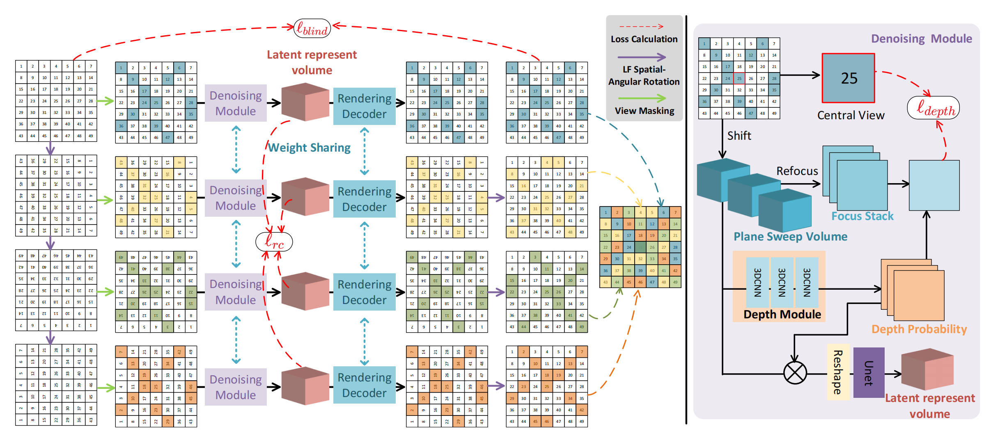
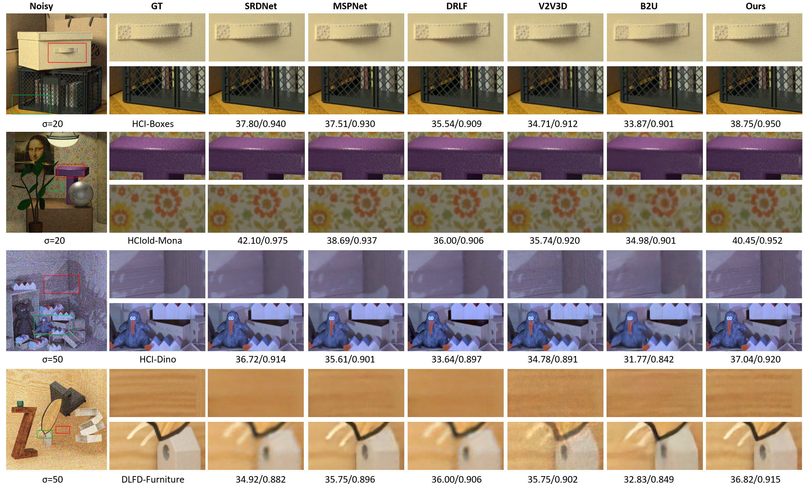
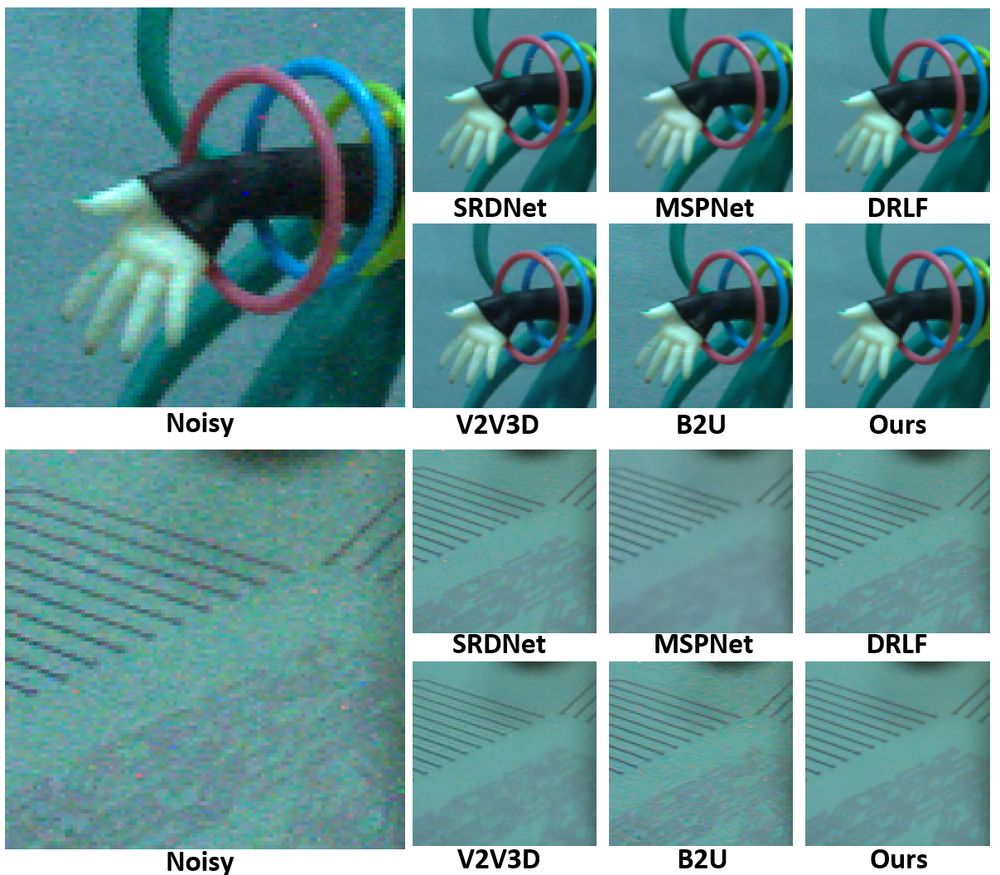

LF-BVN: Blind-View Network for Self-Supervised Light Field Denoising
Abstract
Recent advances in learning-based Light Field (LF) image denoising have achieved impressive results. However, these methods rely heavily on large-scale noisy-clean image pairs and often fail to generalize to unseen or complex noise. In this work, we observe that the inherent multi-view consistency of LF images makes it highly unlikely for noise to be coherent across views, offering a more reliable supervisory signal for self-supervised denoising. Building on this insight, we extend the blind-spot principle to the LF domain and propose a novel LF Blind-View denoising Network (LF-BVN). We first introduce a geometric invariance mask that leverages angular redundancy for efficient full-view supervision. To enforce cross-view photometric consistency, we further introduce latent representation volumes and enforce consistency between them. Additionally, we exploit focus stacks to extract latent depth cues from noisy observations, providing further guidance. Extensive experiments show that LF-BVN achieves competitive denoising performance while maintaining strong cross-view consistency without requiring clean data or external supervision.

The overview of our proposed LF-BVN framework (left) and the detailed denoising module (right). By rotating the LF and applying the same view mask (GIM), four branches process different inputs but share network parameters to jointly generate a complete denoised LF. The denoising module reconstructs clean latent representation volumes from noisy data and the $ \ell_{rc} $ enforces the consistency between all denoised views. Then the decoder renders the denoised views, respectively. In the denoising module, we first construct PSV and use a UNet to obtain the latent representation volume. A refocusing-based depth estimation module applies the $\ell_{depth}$ constraint and provides additional depth guidance.

Qualitative denoising results on synthetic datasets in sRGB space.

Qualitative denoising results on real-world LF image
BibTeX